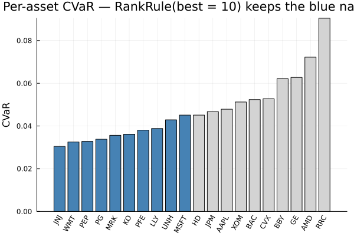
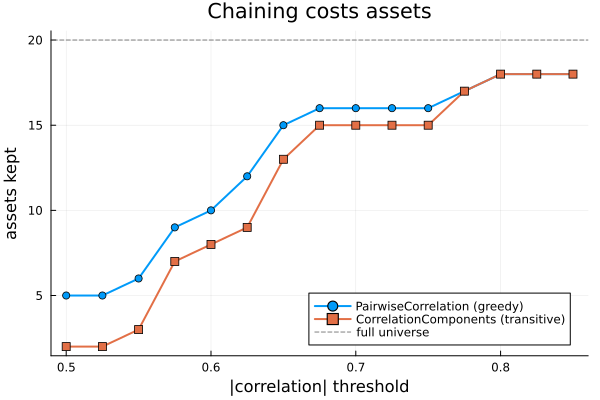

The source files can be found in examples/.
Asset pre-selection
Not every asset in a universe earns its place. Some carry no information at all — a constant column, a name that never traded. Some are dominated: you asked for the twenty lowest-risk names and got two hundred. And some are redundant, moving so closely with another asset that keeping both tells the optimiser the same thing twice, inflating its confidence in a correlation structure that is really one factor wearing two hats.
Asset selectors narrow the universe from the data, as ordinary preprocessing estimators. They know nothing about pipelines; a Pipeline drives them through fit_preprocessing and apply_preprocessing exactly as it drives a prior estimator through prior. Three families:
CompleteAssetSelector— drop any asset column holding amissingorNaN.ScoreSelector— score every asset with a risk measure, keep what a rule admits.ZeroVarianceFilteris the named special case.RedundancySelector— discard assets that duplicate information others carry.
The idea that makes all of this safe is that the universe a selector chooses on the training window is its fitted state. Applying the fitted result to an unseen window replays that universe rather than re-deciding it. Without that, selection would be the purest form of look-ahead bias: choosing your assets using the returns you are about to be scored on.
Reach for a selector whenever the universe itself is a modelling decision rather than a given. Degenerate columns (ZeroVarianceFilter, CompleteAssetSelector) are hygiene — run them always. Score-based selection (ScoreSelector) is a hypothesis: that pre-screening on a risk measure improves out-of-sample outcomes. Redundancy pruning (RedundancySelector) is a conditioning fix, for when a near-singular correlation matrix is destabilising the optimiser. Screening and pruning are hyperparameters — tune them inside cross-validation (§7), never on the full sample.
using PortfolioOptimisers, PrettyTables, DataFrames, Statistics, StatsAPIresfmt = (v, i, j) -> begin if isa(v, Number) && !isa(v, Integer) return "$(round(v * 100, digits = 3)) %" else return v endend;1. The data
Twenty S&P 500 names, the last 1000 trading days. Real data, so the correlations are real too — that matters for §5, where two algorithms that sound equivalent give different answers.
using CSV, TimeSeriesX = TimeArray(CSV.File(joinpath(@__DIR__, "..", "SP500.csv.gz")); timestamp = :Date)rd = prices_to_returns(X[(end - 1000):end])size(rd.X), rd.nx((1000, 20), ["AAPL", "AMD", "BAC", "BBY", "CVX", "GE", "HD", "JNJ", "JPM", "KO", "LLY", "MRK", "MSFT", "PEP", "PFE", "PG", "RRC", "UNH", "WMT", "XOM"])2. Scoring an asset with a risk measure
ScoreSelector scores asset i by evaluating a risk measure on that asset's own return series: score(view(X, :, i)). There is no separate score taxonomy to learn, because the risk-measure family already spans everything you would want to rank on — variance and semi-variance, VaR and CVaR, the drawdown measures, and MeanReturn.
Two traits do the work. supports_precomputed_returns says whether a measure's functor can consume a bare return series at all, and bigger_is_better says which end of the resulting ordering is "best".
measures = ["SCM()" => SCM(), "ConditionalValueatRisk()" => ConditionalValueatRisk(), "MaximumDrawdown()" => MaximumDrawdown(), "MeanReturn()" => MeanReturn(), "Variance()" => Variance()]pretty_table(DataFrame(; measure = first.(measures), scoreable = [PortfolioOptimisers.supports_precomputed_returns(r) for (_, r) in measures], bigger_is_better = [PortfolioOptimisers.bigger_is_better(r) for (_, r) in measures]))┌──────────────────────────┬───────────┬──────────────────┐
│ measure │ scoreable │ bigger_is_better │
│ String │ Bool │ Bool │
├──────────────────────────┼───────────┼──────────────────┤
│ SCM() │ true │ false │
│ ConditionalValueatRisk() │ true │ false │
│ MaximumDrawdown() │ true │ false │
│ MeanReturn() │ true │ true │
│ Variance() │ false │ false │
└──────────────────────────┴───────────┴──────────────────┘So ConditionalValueatRisk is minimised and MeanReturn is maximised, and a rule that says best means the right thing for each without you having to remember which.
cvar = PortfolioOptimisers.asset_scores(ConditionalValueatRisk(), rd.X)mu = PortfolioOptimisers.asset_scores(MeanReturn(), rd.X)pretty_table(sort(DataFrame(; asset = rd.nx, cvar = cvar, mean_return = mu), :cvar); formatters = [resfmt])┌────────┬─────────┬─────────────┐
│ asset │ cvar │ mean_return │
│ String │ Float64 │ Float64 │
├────────┼─────────┼─────────────┤
│ JNJ │ 3.045 % │ 0.05 % │
│ WMT │ 3.25 % │ 0.058 % │
│ PEP │ 3.276 % │ 0.074 % │
│ PG │ 3.38 % │ 0.072 % │
│ MRK │ 3.562 % │ 0.067 % │
│ KO │ 3.615 % │ 0.054 % │
│ PFE │ 3.807 % │ 0.051 % │
│ LLY │ 3.881 % │ 0.14 % │
│ UNH │ 4.288 % │ 0.103 % │
│ MSFT │ 4.509 % │ 0.105 % │
│ HD │ 4.51 % │ 0.084 % │
│ JPM │ 4.67 % │ 0.062 % │
│ AAPL │ 4.785 % │ 0.146 % │
│ XOM │ 5.122 % │ 0.089 % │
│ BAC │ 5.236 % │ 0.061 % │
│ CVX │ 5.273 % │ 0.092 % │
│ BBY │ 6.213 % │ 0.08 % │
│ GE │ 6.273 % │ 0.063 % │
│ AMD │ 7.223 % │ 0.172 % │
│ RRC │ 9.046 % │ 0.187 % │
└────────┴─────────┴─────────────┘2.1 Variance cannot score a single asset
This is the one sharp edge in reusing the risk-measure family, and it is worth meeting head-on. Variance is a WeightsInput measure: its functor consumes portfolio weights and a covariance matrix, not a return series. It has no meaning applied to one asset in isolation, so ScoreSelector rejects it at construction rather than silently computing something else.
try ScoreSelector(; score = Variance(), rule = ThresholdRule(; lo = 0.0))catch e println(e.msg)end`Variance` cannot score a single asset's return series: its `supports_precomputed_returns` is false, so its functor consumes portfolio weights rather than a precomputed return vector. `SCM()` computes the same quantity from a return series and is scoreable.The remedy is in the error: SCM() — the second central moment, an alias for LowOrderMoment with SecondMoment and FullMoment — computes the same quantity from a return series, and is scoreable.
PortfolioOptimisers.asset_scores(SCM(), rd.X)[1:3],var(rd.X[:, 1:3]; dims = 1, corrected = false)([0.0004644201994021763, 0.0011897682783638284, 0.0005658656139818306], [0.00046395577920277413 0.0011885785100854648 0.0005652997483678488])3. Rules: what to do with the scores
A selection rule turns per-asset scores into a keep-mask. Rules come in two kinds, and the distinction is not cosmetic.
Literal. ThresholdRule compares raw scores against absolute bounds (lo, hi), both optional and both exclusive. It ignores bigger_is_better. That is deliberate: a zero-variance filter must drop the low-variance assets, so a trait-aware "keep the better ones" would invert its whole purpose.
Ordinal. RankRule and QuantileRule sort the assets best-to-worst, consulting bigger_is_better, and take counts (or fractions) from each end. Not positions — counts. That is what makes "drop the worst 5" expressible without knowing how many assets there are, and what lets you take both tails at once.
rules = ["RankRule(best = 5)" => RankRule(; best = 5), "RankRule(worst = 5)" => RankRule(; worst = 5), "RankRule(worst = 3, action = :drop)" => RankRule(; worst = 3, action = :drop), "RankRule(best = 2, worst = 2)" => RankRule(; best = 2, worst = 2), "QuantileRule(best = 0.25)" => QuantileRule(; best = 0.25)]rows = map(rules) do (label, rule) kept = fit_preprocessing(ScoreSelector(; score = ConditionalValueatRisk(), rule = rule), rd).nx return (; rule = label, n = length(kept), kept = join(kept, ", "))endpretty_table(DataFrame(rows))┌─────────────────────────────────────┬───────┬────────────────────────────────────────────────────────────────────────────────────┐
│ rule │ n │ kept │
│ String │ Int64 │ String │
├─────────────────────────────────────┼───────┼────────────────────────────────────────────────────────────────────────────────────┤
│ RankRule(best = 5) │ 5 │ JNJ, MRK, PEP, PG, WMT │
│ RankRule(worst = 5) │ 5 │ AMD, BBY, CVX, GE, RRC │
│ RankRule(worst = 3, action = :drop) │ 17 │ AAPL, BAC, BBY, CVX, HD, JNJ, JPM, KO, LLY, MRK, MSFT, PEP, PFE, PG, UNH, WMT, XOM │
│ RankRule(best = 2, worst = 2) │ 4 │ AMD, JNJ, RRC, WMT │
│ QuantileRule(best = 0.25) │ 5 │ JNJ, MRK, PEP, PG, WMT │
└─────────────────────────────────────┴───────┴────────────────────────────────────────────────────────────────────────────────────┘Note the orientation flip. ConditionalValueatRisk is minimised, so best = 5 returns the five defensive names. Swap the score for MeanReturn, which is maximised, and best = 5 returns the five growth names — the same rule, the opposite end of the table, and no flag to remember.
DataFrame(; rule = ["best = 5", "worst = 5"], by_cvar = [join(fit_preprocessing(ScoreSelector(; score = ConditionalValueatRisk(), rule = RankRule(; best = 5)), rd).nx, ", "), join(fit_preprocessing(ScoreSelector(; score = ConditionalValueatRisk(), rule = RankRule(; worst = 5)), rd).nx, ", ")], by_mean_return = [join(fit_preprocessing(ScoreSelector(; score = MeanReturn(), rule = RankRule(; best = 5)), rd).nx, ", "), join(fit_preprocessing(ScoreSelector(; score = MeanReturn(), rule = RankRule(; worst = 5)), rd).nx, ", ")])| Row | rule | by_cvar | by_mean_return |
|---|---|---|---|
| String | String | String | |
| 1 | best = 5 | JNJ, MRK, PEP, PG, WMT | AAPL, AMD, LLY, MSFT, RRC |
| 2 | worst = 5 | AMD, BBY, CVX, GE, RRC | BAC, JNJ, KO, PFE, WMT |
3.1 Hygiene: degenerate columns
ZeroVarianceFilter is ScoreSelector(; score = SCM(), rule = ThresholdRule(; lo = tol)) under a friendlier name. A constant column has zero variance, contributes nothing, and makes a covariance matrix singular.
CompleteAssetSelector is its counterpart for missingness at the returns level — useful when a pipeline is fed a ReturnsResult directly and the price-level MissingDataFilter never runs.
Xz = copy(rd.X)Xz[:, 4] .= 0.0 # BBY stops tradingrd_z = ReturnsResult(; nx = rd.nx, X = Xz)setdiff(rd.nx, fit_preprocessing(ZeroVarianceFilter(), rd_z).nx)1-element Vector{String}:
"BBY"tol defaults to 1e-12 rather than 0 because a column that moves by 1e-18 is constant for every purpose that matters, and the bound is exclusive so tol = 0 still drops an exactly constant asset.
4. Ties: if we cannot tell them apart, keep neither
This is the library's one genuinely surprising rule, so it is worth understanding rather than discovering.
When two assets are indistinguishable under the criterion being applied, neither is kept. A tied block straddling a rank cut is dropped whole rather than split arbitrarily. The alternative — breaking the tie by column index — would make your portfolio depend on the order of the columns in your CSV, which is not a property of the data.
The consequence to internalise: RankRule(; best = k) may return fewer than k assets.
v = PortfolioOptimisers.asset_scores(SCM(), rd.X)ord = sortperm(v) # ascending variance; lower is betterXs = copy(rd.X)Xs[:, ord[3]] = Xs[:, ord[2]] # make ranks 2 and 3 tie exactlyrd_tie = ReturnsResult(; nx = rd.nx, X = Xs)tie_rows = map([1, 2, 3]) do k kept = fit_preprocessing(ScoreSelector(; score = SCM(), rule = RankRule(; best = k)), rd_tie).nx return (; requested = k, returned = length(kept), kept = join(kept, ", "))endpretty_table(DataFrame(tie_rows))┌───────────┬──────────┬─────────────┐
│ requested │ returned │ kept │
│ Int64 │ Int64 │ String │
├───────────┼──────────┼─────────────┤
│ 1 │ 1 │ JNJ │
│ 2 │ 1 │ JNJ │
│ 3 │ 3 │ JNJ, KO, PG │
└───────────┴──────────┴─────────────┘best = 2 returns one asset: ranks 2 and 3 tie, the block straddles the cut, so it is excluded. best = 3 returns three: the same block now fits entirely inside the cut, so it is kept whole. And a window whose scores are all equal selects nothing — which fit_preprocessing reports as an error rather than handing an empty universe downstream.
The same stance governs redundancy. Two identical columns are perfectly correlated and score identically, so neither survives.
rd_dup = ReturnsResult(; nx = [rd.nx; "AAPL_copy"], X = hcat(rd.X, rd.X[:, 1]))dup_kept = fit_preprocessing(RedundancySelector(; alg = PairwiseCorrelation(; t = 0.99), score = SCM()), rd_dup).nx("AAPL" in dup_kept, "AAPL_copy" in dup_kept, length(dup_kept))(false, false, 19)5. Redundancy: two algorithms, two different answers
RedundancySelector has two parts. alg decides which assets are redundant; score decides which member of a redundant group survives. Leave score as nothing and the correlation algorithms fall back on their own rule — the asset with the lowest summary correlation to the rest of the universe survives, i.e. the least redundant one.
The two correlation algorithms sound interchangeable. They are not.
PairwiseCorrelation is greedy. It visits correlated pairs from most to least correlated and drops the worse asset of each, until no surviving pair exceeds t. That is the literal promise the threshold makes, and it is the default.
CorrelationComponents reads the same correlations transitively. Assets are nodes, over-threshold correlations are edges, and each connected component keeps one representative. If ρ(A,B) = 0.97 and ρ(B,C) = 0.97 but ρ(A,C) = 0.10, all three are one component and two are discarded — even though A and C are uncorrelated.
Chaining is not hypothetical. On real data, at the same threshold:
greedy = RedundancySelector(; alg = PairwiseCorrelation(; t = 0.65, absolute = true), score = SCM())comps = RedundancySelector(; alg = CorrelationComponents(; t = 0.65, absolute = true), score = SCM())kept_g = fit_preprocessing(greedy, rd).nxkept_c = fit_preprocessing(comps, rd).nx# the greedy guarantee, verified: no surviving pair exceeds tgi = [findfirst(==(n), rd.nx) for n in kept_g]sub = abs.(cor(rd.X[:, gi]))max_surviving = maximum(sub[i, j] for j in axes(sub, 2) for i in (j + 1):size(sub, 1))DataFrame(; algorithm = ["PairwiseCorrelation", "CorrelationComponents"], kept = [length(kept_g), length(kept_c)], max_surviving_abs_cor = [round(max_surviving; digits = 3), missing], extra_drops = ["—", join(setdiff(kept_g, kept_c), ", ")])| Row | algorithm | kept | max_surviving_abs_cor | extra_drops |
|---|---|---|---|---|
| String | Int64 | Float64? | String | |
| 1 | PairwiseCorrelation | 15 | 0.643 | — |
| 2 | CorrelationComponents | 13 | missing | KO, XOM |
absolute = true treats a correlation of -0.9 as redundant too, which is usually what you want: two assets moving in lockstep carry the same information whichever sign it comes with.
Neither answer is wrong. Greedy honours the promise a threshold makes and keeps more assets; components makes the stronger claim that a correlated blob deserves one representative, and reduces harder. Choose knowingly.
5.1 Clustering as the grouping rule
ClusterGroups partitions with clusterise, so the entire clustering family — hierarchical linkage, DBHT, the optimal-number-of-clusters estimators — becomes a way to define "redundant". It has no fallback survivor rule, so it requires a score.
clustered = RedundancySelector(; alg = ClusterGroups(), score = SCM())kept_cl = fit_preprocessing(clustered, rd).nxlength(kept_cl), join(kept_cl, ", ")try RedundancySelector(; alg = ClusterGroups()) # no scorecatch e println(e.msg)enda ClusterGroups redundancy algorithm cannot choose the survivor of a group on its own; give the RedundancySelector a score6. The universe is fitted state
Everything above ran fit_preprocessing on one window. In a pipeline, that window is the training window, and the selected universe is carried in the fitted result. Predicting on an unseen window replays it.
selector = ScoreSelector(; score = ConditionalValueatRisk(), rule = RankRule(; best = 10))train = ReturnsResult(; nx = rd.nx, X = rd.X[1:700, :])test = ReturnsResult(; nx = rd.nx, X = rd.X[701:end, :])fitted = fit_preprocessing(selector, train)replayed = apply_preprocessing(fitted, test)# the *test* window's own ten lowest-CVaR names would have been differentwould_have_chosen = fit_preprocessing(selector, test).nxDataFrame(; universe = ["fitted on train", "replayed on test", "test window's own choice"], assets = [join(fitted.nx, ", "), join(replayed.nx, ", "), join(would_have_chosen, ", ")])| Row | universe | assets |
|---|---|---|
| String | String | |
| 1 | fitted on train | HD, JNJ, KO, LLY, MRK, MSFT, PEP, PFE, PG, WMT |
| 2 | replayed on test | HD, JNJ, KO, LLY, MRK, MSFT, PEP, PFE, PG, WMT |
| 3 | test window's own choice | JNJ, JPM, KO, LLY, MRK, PEP, PFE, PG, UNH, WMT |
The replayed universe is the training one, not the test window's own. That difference is the look-ahead bias a fit/apply contract exists to prevent.
6.1 Step order is checked, not assumed
A selector shrinks :returns. Any slot already derived from :returns — a prior, a phylogeny, an uncertainty set, generated constraints — is then computed on an asset universe that no longer exists. Pipeline rejects that ordering at construction rather than letting a stale, asset-misdimensioned prior reach the optimiser.
try Pipeline(; steps = (EmpiricalPrior(), ZeroVarianceFilter(), EqualWeighted()))catch e println(e.msg)enda ScoreSelector step writes the :returns slot, invalidating the :prior slot written by an earlier EmpiricalPrior step; the stale :prior result would no longer match the assets of the new :returns data. Move the ScoreSelector step before the EmpiricalPrior step, or drop one of them.Put the selector first, and it composes with everything else without comment.
using Clarabelslv = Solver(; name = :clarabel, solver = Clarabel.Optimizer, settings = Dict("verbose" => false), check_sol = (; allow_local = true, allow_almost = true))pipe = Pipeline(; steps = ("select" => ScoreSelector(; score = ConditionalValueatRisk(), rule = RankRule(; best = 10)), EmpiricalPrior(), "opt" => MeanRisk(; opt = JuMPOptimiser(; slv = slv))))res = StatsAPI.fit(pipe, rd)pretty_table(DataFrame(; asset = res.ctx.returns.nx, weight = res.w); formatters = [resfmt])┌────────┬──────────┐
│ asset │ weight │
│ String │ Float64 │
├────────┼──────────┤
│ JNJ │ 25.982 % │
│ KO │ 17.616 % │
│ LLY │ 0.0 % │
│ MRK │ 17.463 % │
│ MSFT │ 0.0 % │
│ PEP │ 0.0 % │
│ PFE │ 6.215 % │
│ PG │ 4.853 % │
│ UNH │ 0.0 % │
│ WMT │ 27.871 % │
└────────┴──────────┘Ten assets in, ten weights out. predict on any window replays the fitted ten.
pred = StatsAPI.predict(res, rd)expected_risk(ConditionalValueatRisk(), pred)0.0247872752551669937. Selection is a hyperparameter
How many assets should you keep? That is not a question to answer by looking at the answer. search_cross_validation fits the entire pipeline — selection included — on each training window and scores it on the held-out one, so no candidate ever sees the test window while choosing its universe.
Lens keys reach into the selector by name: "select.rule" swaps the whole rule.
p = ["select.rule" => [RankRule(; best = 5), RankRule(; best = 10), RankRule(; best = 15)]]gscv = GridSearchCrossValidation(p; cv = IndexWalkForward(500, 250), r = ConditionalValueatRisk())tuned = search_cross_validation(pipe, gscv, rd)pretty_table(DataFrame(; k = [v[1].best for v in tuned.val_grid], mean_score = vec(mean(tuned.test_scores; dims = 1))))┌───────┬────────────┐
│ k │ mean_score │
│ Int64 │ Float64 │
├───────┼────────────┤
│ 5 │ -0.0214013 │
│ 10 │ -0.0204401 │
│ 15 │ -0.0204521 │
└───────┴────────────┘tuned.opt is the winning pipeline, selector and all, ready to fit on the full sample.
tuned.opt.steps[1].rule.best10Two things make this honest. Counts saturate at the number of assets, so a grid point of best = 50 on a 20-asset universe keeps 20 rather than throwing — a sweep is never killed by its largest point. And every other degenerate case fails closed: an unscoreable measure, a rule that selects nothing, a non-finite score, a fitted asset missing from a test window.
8. Visualising the two decisions
The score-and-rule decision is one dimension: sort the assets, cut somewhere.
using StatsPlotsperm = sortperm(cvar)kept10 = fit_preprocessing(ScoreSelector(; score = ConditionalValueatRisk(), rule = RankRule(; best = 10)), rd).nxcolours = [n in kept10 ? :steelblue : :lightgray for n in rd.nx[perm]]bar(1:length(perm), cvar[perm]; color = colours, legend = false, xticks = (1:length(perm), rd.nx[perm]), xrotation = 60, ylabel = "CVaR", title = "Per-asset CVaR — RankRule(best = 10) keeps the blue names")
The redundancy decision is a threshold sweep, and it shows the chaining gap opening up. The two algorithms agree only once the graph has no chains left to traverse.
thrs = 0.5:0.025:0.85n_greedy = [length(fit_preprocessing(RedundancySelector(; alg = PairwiseCorrelation(; t = t, absolute = true), score = SCM()), rd).nx) for t in thrs]n_comps = [length(fit_preprocessing(RedundancySelector(; alg = CorrelationComponents(; t = t, absolute = true), score = SCM()), rd).nx) for t in thrs]plot(thrs, n_greedy; label = "PairwiseCorrelation (greedy)", marker = :circle, lw = 2)plot!(thrs, n_comps; label = "CorrelationComponents (transitive)", marker = :square, lw = 2)hline!([length(rd.nx)]; label = "full universe", ls = :dash, color = :gray)plot!(; xlabel = "|correlation| threshold", ylabel = "assets kept", title = "Chaining costs assets", legend = :bottomright)
Summary
- Asset selectors are returns-level preprocessing estimators. The universe chosen on the training window is fitted state, replayed on unseen windows — that is what keeps selection out of the look-ahead-bias family.
ScoreSelectorscores each asset with any risk measure whosesupports_precomputed_returnsistrue, andbigger_is_betterorientsbest/worstso you never pass a direction flag.Varianceis not scoreable; useSCM().ThresholdRuleis literal and ignores orientation;RankRuleandQuantileRuleare ordinal and take counts (or fractions) from each end, so "drop the worst 5" needs no knowledge ofn.- Ties are excluded, never split.
RankRule(; best = k)may return fewer thankassets, and two identical columns leave no survivor. PairwiseCorrelationguarantees no surviving pair exceeds the threshold;CorrelationComponentsreads correlation transitively and reduces harder. They give different answers on the same input, by design.- A step that rewrites
:returnsafter a prior, phylogeny, uncertainty, or constraint step is rejected at construction — the stale-universe bug is unrepresentable. - Selection thresholds and counts are hyperparameters. Tune them with
search_cross_validation, never on the full sample.
This page was generated using Literate.jl.